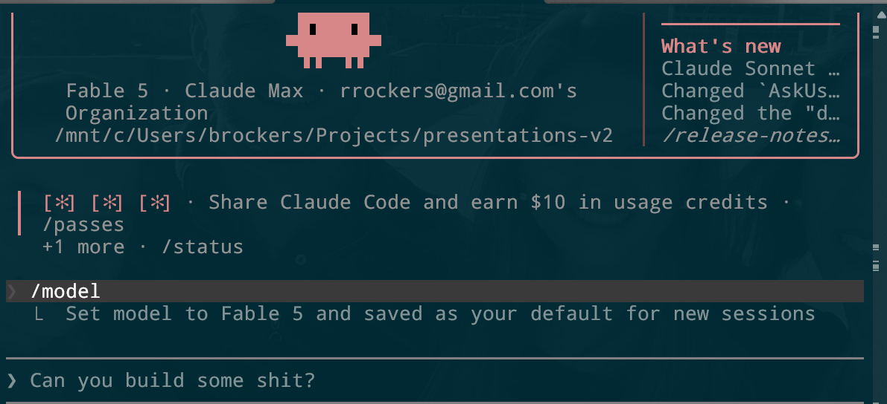
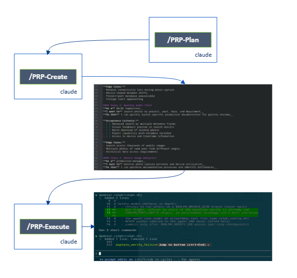
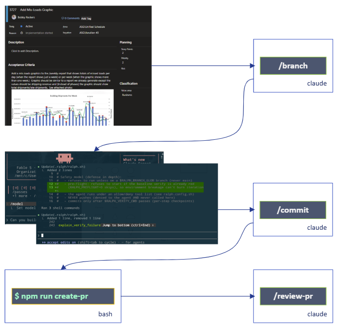

AI Assisted Development Progression at ASG
The first rule of any technology used in a business is that automation applied to an efficient operation will magnify the efficiency. The second is that automation applied to an inefficient operation will magnify the inefficiency.
--Bill Gates
Vibe Coding Version 1

The Good Version 1
- Automate repetitive tasks
- Large scale templating functionality
- Easy to get summarized context
The Bad Version 1
- Worker "just does something"
- Buggy/inconsistent code
- Long Run Sessions hallucinate
PRD Workflow Version 2

The Good version 2
- Prompt Engineering defined process
- Better, more consistent results
- More likely to actually build what you want
The Bad Version 2
- Workflow is outside our normal SCRUM workflow
- Adoption was generally poor because of the workflow
- Automation is all Claude based, no scripting
- Uses LOTS of tokens, and sub agents, inefficiently
- /prp-build is language specific
ASG Workflow version 3

The Good version 3
- Follows & Automates OUR workflow
- Automated Cross-LLM AI Review
- Context Driven at each stage
- Significant use of scripting for deterministic tasks
- Scripting allows for use outside of Claude
The Bad version 3
- Onerous for defining PRD requirements on the creator of the task
- AI still only has the context you've given it
- Agent Experts run with legacy context
- Agent Experts are inferred instead of defined
- No built-in mechanism for continual agent improvement
ASG Ralph Workflow version 4
Improvements
- PRD like context, BUT inside our existing workflow
- AI Prompts for deep understanding and clarity
- Skill Specific AI Agents
- Full scripted unattended development
- Model continually learns/improves itself via guardrails & proposals
New Commands
- /grill-me: Claude command to make Claude ask questions where is lacks clarity.
- /branch-ralph: /branch but will automatically pull the selected task into the ralph loop.
- /create-ralph: Generates the ralph.sh script and prd.json file for autonomous development
- Agent Experts are inferred instead of defined
- No built-in mechanism for continual agent improvement
Github: github.com/brockers • LinkedIn: linkedin.com/in/brockers